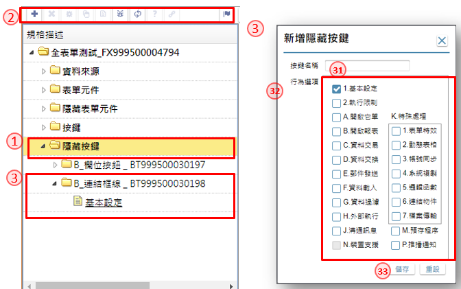

如如-智慧軟體機器人
如如-智慧軟體機器人
IDE操作手冊 6.表單規格描述
作業目的：系統分析人員需描述規格、業務規範及規格描述記錄下來，讓系統的開發有所依循。
表單規格包含以下項目：
6.1 規格描述
一次描述單個元件規格
作業目的：針對單一表單、元件或按鍵，利用個別選項的組合或自行編撰成規格。
參考資料：℗文件


- 規格描述頁籤：以文字敍述指定的物件有關的業務規範及規格描述。
- 描述：描述規範及需求內容
- 表單描述速成區：利用與表單有關的選項，匹配組合成規格敍述
- 元件描述速成區：利用與元件有關的選項，匹配組合成規格敍述
- 按鍵描述速成區：利用與按鍵有關的選項，匹配組合成規格敍述
- 重組鍵：把各類速成區的內容，利用本按鍵組合起來變成規格描述
- 附件備註頁籤：在描述中無法單純以文字說明，而必須附件表格的內容、圖形附件才完整的備註項目。
- 附註工具列：利用各類的工具圖示編輯備註內容
- 參考附註：編輯具規格參考義意的內容
- 附件檔：指定有關的檔案附件，上傳到資料庫。
- 儲存鍵：將設定好的規格描述及參考附件內容，儲存到資料庫
6.1.2一次描述多個元件規格
作業目的：在表單版面上點選「規格描述」鍵，開啟本單對表單下的元件、按鍵進行規格撰寫
參考資料：℗文件

- 編輯鍵：進入編輯狀態
- 描述：依資料列駐留的元件類型撰寫需求規格
- 儲存鍵：將設定好的規格描述儲存到資料庫
6.2 規格展開
作業目的：在表單版面上點選「規格定義」鍵，開啟本單對表單下的元件、按鍵進行規格註解架構的展開
參考資料：℗文件

- 工具列：放置不同工具圖示的區域，以下針對共通的按鍵進行說明
1.1 規格描述：依清單區留的料號，開啟相對【規格描述】進行規格說明，操作方式請參考［6.1.1］
1.2 檢錯：檢視清單區的定義是否符合語法驗證
1.3 重新整理：重整清單區的內容。
1.4 線上說明：依清單區留的宣告，開啟相對【線上說明】
1.5 處理狀態：切換開工/完工的狀態, 影響【專案統計】 - 清單區：將駐留表單下的所有組成的表單、元件、按鍵，以樹狀階層展開
- 定義區：依駐留在清單區的記錄或宣告，呈現細部的規格註解、定義
3.1 編輯鍵：進入定義區的編輯狀態
3.2 儲存鍵：將定義區的內容儲存到資料庫。
6.2.1 資料來源

- 工具列：駐留「資料來源」節點時，工具列作用如下
1.1 新增鍵：增加資料檔區
1.2 刪除鍵：當駐留在清單的「資料區」時，可點選本鍵刪除記錄 - 清單區：
2.1 第一階是基本設定、資料區
6.2.2 表單元件
作業目的：

- 工具列：駐留「元件」節點時，工具列作用如下
1.1 設定鍵：開啟【元件行為選項】
1.2 複製鍵：開啟【元件內容複製】 - 清單區：
2.1 第一階是元件名稱
2.2 第二階是基本設定及各類行為宣告
3.元件行為選項：
3.1 所有跟元件有關的行為選項
3.2 預設鍵：會依元件類型將需要的行為必要項先行勾選
3.3 儲存鍵：系統依據勾選的項目，產生不同的行為，呈現在「清單區」
6.2.3 隱藏元件
作業目的：

- 駐留「隱藏表單元件」節點
- 工具列：駐留「隱藏表單元件」節點時，工具列作用如下 2.1 新增鍵：增加不顯示在表單上的元件，開啟【新增隱藏元件】 2.2 刪除鍵：可刪除駐留的隱藏元件 2.3 設定鍵：開啟【元件行為選項】 2.4 複製鍵：開啟【元件內容複製】
- 清單區： 3.1 第一階是元件名稱 3.2 第二階是基本設定及各類行為宣告
- 新增隱藏元件： 4.1 元件名稱：輸入元件名稱 4.2 所有跟元件有關的行為選項 4.3 儲存鍵：系統依據勾選的項目，產生不同的行為，呈現在「清單區」
6.2.4 表單按鍵
作業目的：

- 工具列：駐留「按鍵」節點時，工具列作用如下
1.1 設定鍵：開啟【按鍵行為選項】
1.2 複製鍵：開啟【按鍵內容複製】 - 清單區：
2.1 第一階是按鍵名稱
2.2 第二階是基本設定及各類行為宣告
3.按鍵行為選項：
3.1 所有跟按鍵有關的行為選項
3.2 儲存鍵：系統依據勾選的項目，產生不同的行為，呈現在「清單區」
| 類别 | 按鍵行為 | 功能說明 |
|---|---|---|
| 基本設定 | 按鈕屬性的宣告，名稱、類型、位置、致能時機、圖式等 | |
| 執行限制 | ` `此按鈕被點擊時的前置檢查條件，通常是檢查表單資料的完整性與合理性。可以設定多個先決條件來把關，並且排定檢核順序，以減少後台處理失敗的機會。全部都通過後才會正式啟動此按鈕的各項處理功能，依設計者給定的順序執行之。 | |
| 處理功能 | 開啟它單 | 依執行條件開啟另外一個表單，可以帶給參數 |
| 開啟報表 | 挑選要開啟的報表，可以選擇：預覽(再打印)、郵件夾檔、郵件夾檔、產出PDF，或是存入資料庫 | |
| 資料交易 | 執行資料庫更新，呼叫 DB TX | |
| 資料交換 | 檔案匯入DB、資料匯出為檔案， | |
| 郵件發送 | 依據執行條件發送電子郵件，並可夾檔或是連結 | |
| 資料載入 | 將資料庫的特定資料表內容載入對應檔區，以供操作者瀏覽 | |
| 資料過濾 | 通常使用於條件多筆表單，使用者按下包含過濾功能的按鍵後，依過濾設定的條件濾出表身的資料 | |
| 外部執行 | 執行本表單以外的功能，例如：開啟檔案、啟動外部程式、啟動它表單的按鈕功能、匯出檔案後的處理等等 | |
| 溝通訊息 | 可在兩張表單間傳遞資料，例如A單開B單，兩張單可以主動或是被動式的互傳資訊 | |
| 特殊處理 | 表單特效 | 關閉表單、切換頁籤、更新欄位、啟動按鍵、連結網頁、 |
| 動態表格 | 設定表格內的欄位依條件設定而變動內容 | |
| 帳號同步 | 建立簽入帳號的生、失效與系統同步 | |
| 系統複製 | 進階對系統複製鍵的基本功能做改變設定 | |
| 邏輯函數 | 指定使用系統提供具特定邏輯需求的功能函數 | |
| 連結物件 | 連結系統外的網頁、表單、行事曆 | |
| 檔案傳輸 | 檔案的上傳、下載功能設定 | |
| 預存程序 | 執行預存在資料庫的Stroed Procedure | |
| 行動裝置 | 裝置支援 | 在APP的表單作業時，可呼叫裝置上的資源，進行資料處理或邏輯判斷等 |
| 推播通知 | 設定表格內的欄位依條件設定而變動內容 |
6.2.5 隱藏按鍵
作業目的：

- 駐留「隱藏按鍵」節點時
- 工具列：工具列作用如下 2.1 新增鍵：增加不顯示在表單上的按鍵，開啟【新增隱藏按鍵】 2.2 刪除鍵：可刪除駐留的隱藏按鍵 2.3 設定鍵：開啟【按鍵行為選項】 2.4 複製鍵：開啟【按鍵內容複製】
- 清單區： 3.1 第一階是按鍵名稱 3.2 第二階是基本設定及各類行為宣告 4.新增隱藏按鍵： 4.1 按鍵名稱：輸入按鍵名稱 4.2 所有跟按鍵有關的行為選項 4.3 儲存鍵：系統依據勾選的項目，產生不同的行為，呈現在「清單區」